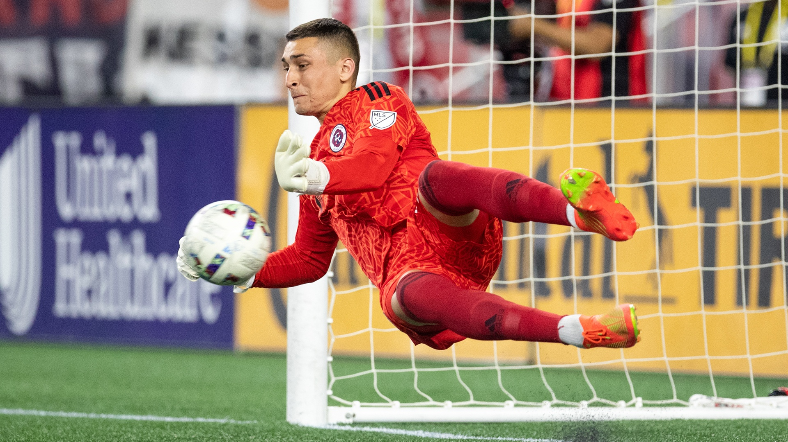
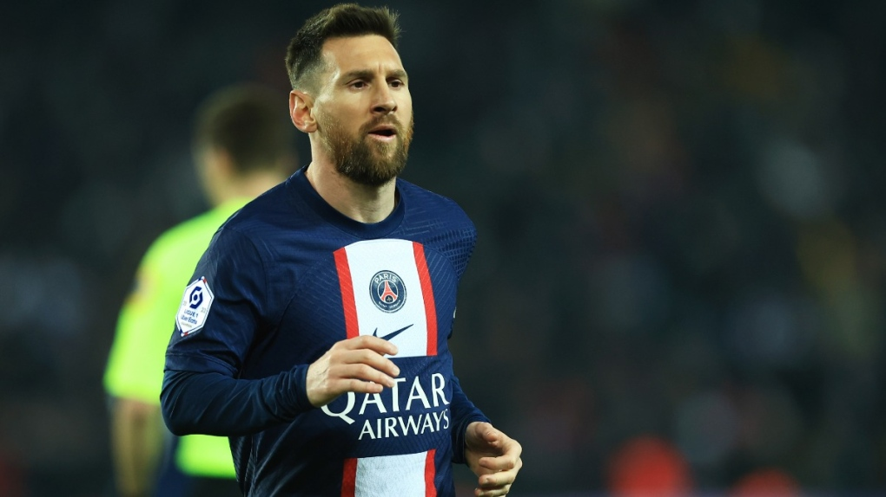

Soccer/football is the most known and played sport in the world and has been played for centuries. Is a skill based game with 22 players on the feild at all time, 11 on each team.

soccer have been played for millennia until 1863 in britian modernized it. during colonialism, colonialist spread this newer version of soccer which have been implimented into their culture. when fifa lanched their first world cup, it had been viewed to the millions and after each year, more people come to watch. the world cup of qatar had over 1 Billion people watching.
the goalie has the most important job of the game. preventing the ball as well as the only one who can hold the ball. from scoring. they were big gloves and has a uniform different from their team to indicate that this is the goalie. the goalie must have quick reaction because the opposing team can kick the ball very quick and will shoot at any open spot they can find.
forwards and the most popular position because you do the scoring. forwards usually have the most speed and skill in their team which they use to score. they're usually 3-4 forwards in a typical match with each working together. some of the most known soccer players are forwards like Pele, Messi and Ronaldo.
now let test your knowledge with the following questions in the QUIZ tab